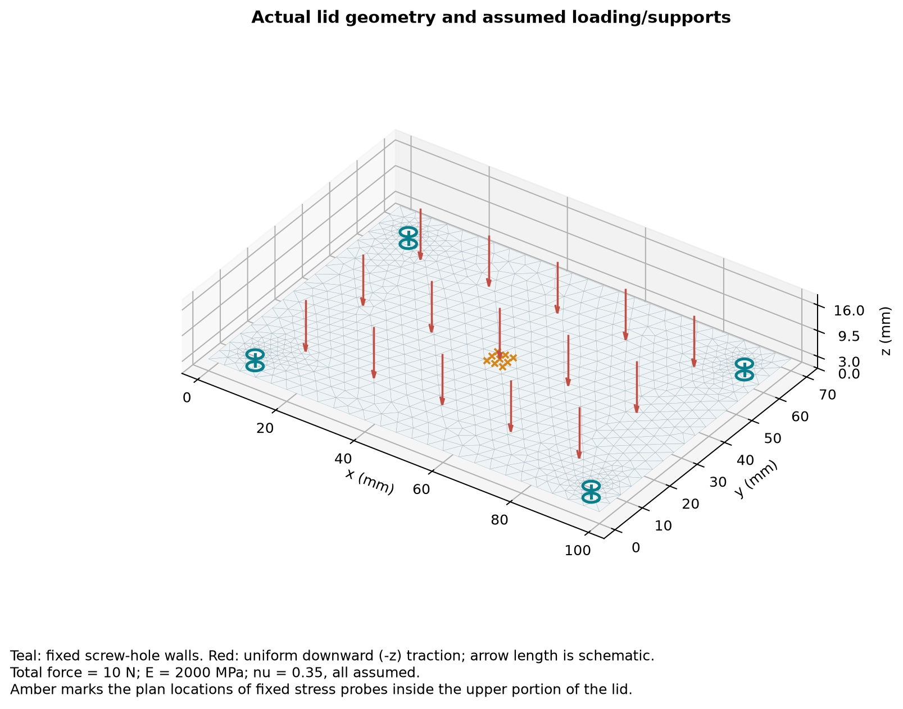
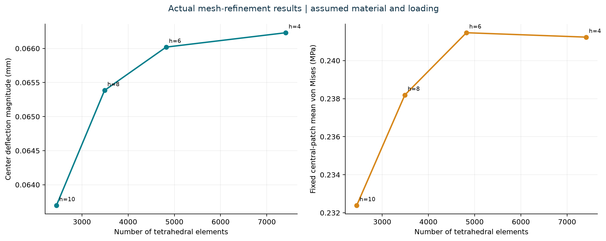
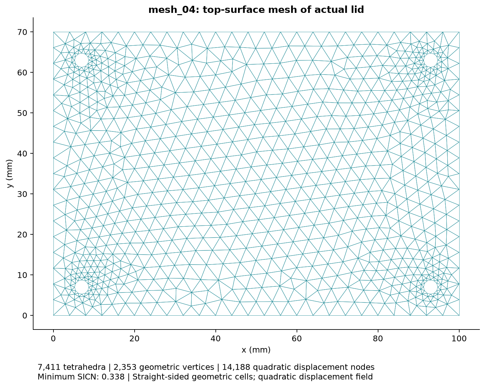
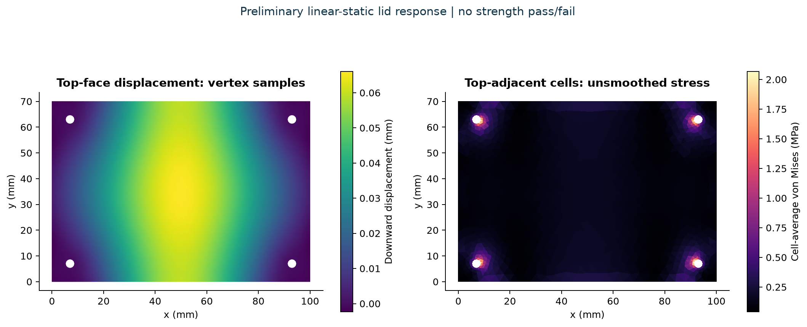

Enclosure lid: mesh refinement and response
Preliminary, assumption-based analysis. Actual STEP geometry and numerical solves; material, loading and rigid supports are illustrative. No material-strength or safety pass is claimed.
1. Geometry and study setup
Named lid extracted from VKA2026.step: 100 × 70 × 3 mm, four 3.5 mm holes. Isotropic material E=2000 MPa, ν=0.35, both assumed. All displacement components fixed on the four screw-hole walls. Uniform downward top-face traction totals 10 N.

2. Mesh statistics
| Target h (mm) | Tetrahedra | Geometric vertices | P2 field nodes | DOFs | Centre abs(uz) (mm) | Probe mean VM (MPa) | Deflection change | Probe stress change |
|---|---|---|---|---|---|---|---|---|
| 10 | 2,449 | 772 | 4,630 | 13,890 | 0.0636966 | 0.232387 | — | — |
| 8 | 3,490 | 1,062 | 6,473 | 19,419 | 0.0653845 | 0.238192 | 2.581% | 2.437% |
| 6 | 4,822 | 1,508 | 9,116 | 27,348 | 0.0660195 | 0.241465 | 0.962% | 1.355% |
| 4 | 7,411 | 2,353 | 14,188 | 42,564 | 0.0662305 | 0.241233 | 0.319% | 0.096% |
Gmsh stores linear geometric vertices; the solver adds quadratic displacement edge nodes. h is the upper mesh-size control. Curved walls are faceted. Full statistics: CSV.
3. Selected response convergence
Centre displacement and mean von Mises stress at nine fixed central points, z=2.7 mm. These measures changed by 0.319% and 0.096% in the final comparison. This is a successive-mesh criterion, not an absolute error bound.

4. Final mesh

5. Displacement and stress fields

Central probe mean: 0.241233 MPa. Largest quadrature-point sample: 2.915480 MPa, with clamp-region peaks that have not been established as converged strength values. No factor of safety is calculated.
6. Numerical checks
The analytical uniaxial-tension patch test passed: relative displacement error 2.420e-15; stress-component error 8.216e-15 MPa. Final lid force-balance error 3.257e-12; free-DOF residual 1.378e-10. These checks verify numerical behavior under the chosen model.
7. Limits and next steps
- Material constants and load are illustrative assumptions, not measured properties or specified service conditions.
- Screw-hole supports are fully fixed; bolts, preload, contact, gasket and enclosure flexibility are not modeled.
- Only the lid is analyzed; electronics, enclosure base, helmet and mounting assembly are excluded.
- Linear, static, small-displacement elasticity only; no impact, drop, creep, fatigue, plasticity, thermal, sealing or intrinsic-safety qualification.
- No material strength has been selected, so no safety factor or strength pass/fail is calculated.
- A successive-mesh comparison is not an absolute error estimate or experimental validation.
The actual enclosure is 100 × 70 × 25 mm; the submission's smaller pod envelope remains a target. Select the real material, manufacturing process and service loads, model actual fastener/contact behavior, and validate with physical tests before making a product decision.
8. Reproducible files
Detailed report and rerun instructions · Editable assumptions · Full results · Analytical check · Final tagged mesh · Field export
Source STEP SHA-256: 8857d052af91eca43b5cf8fd16ea1c35b9f05d296f065b5a0be92e9c094a27be